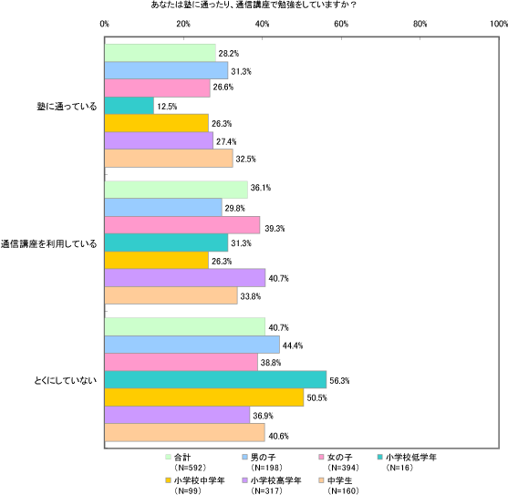
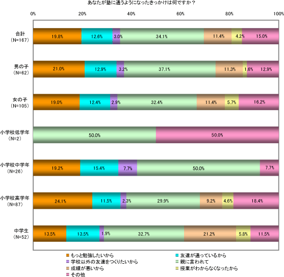
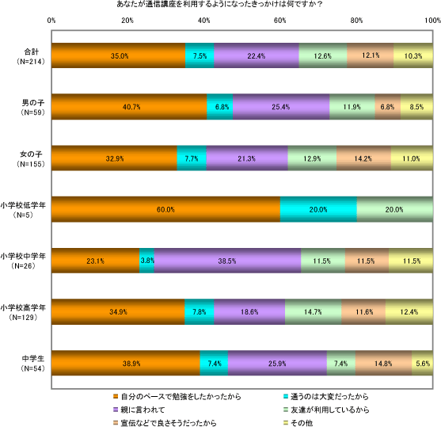
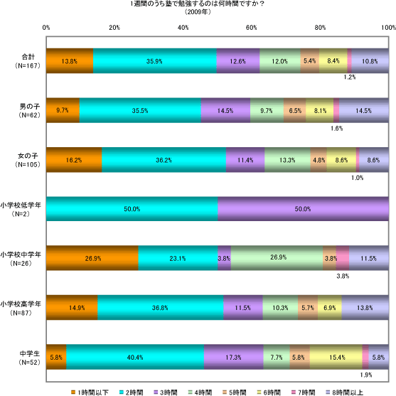
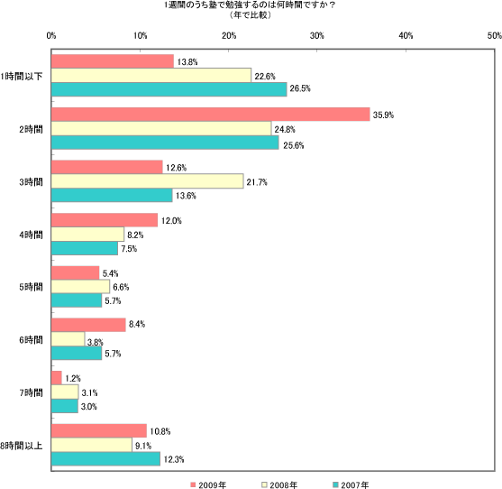
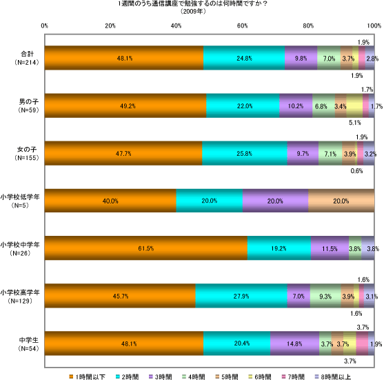
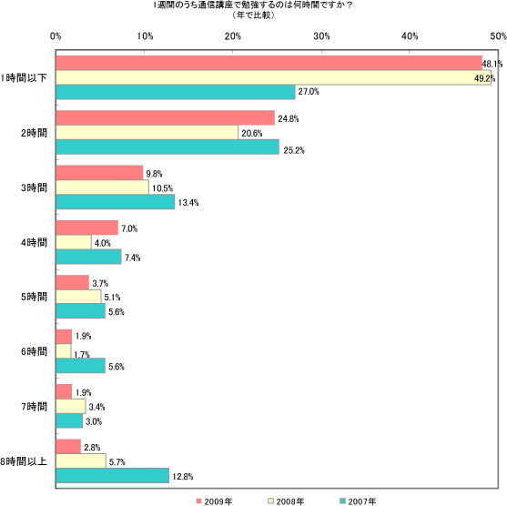
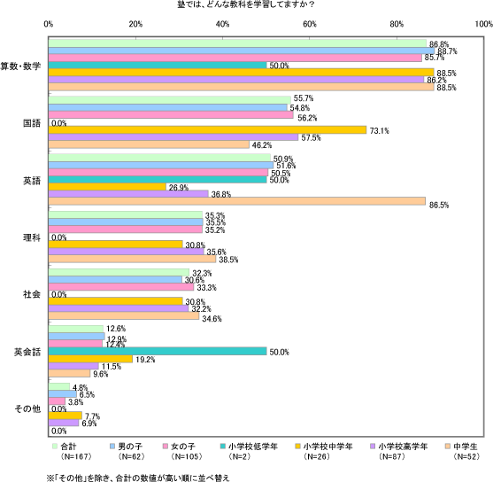
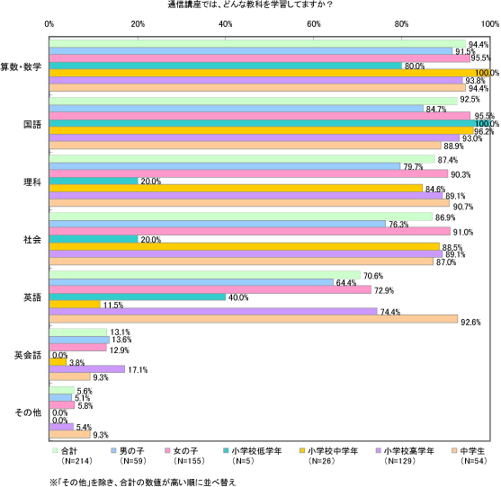
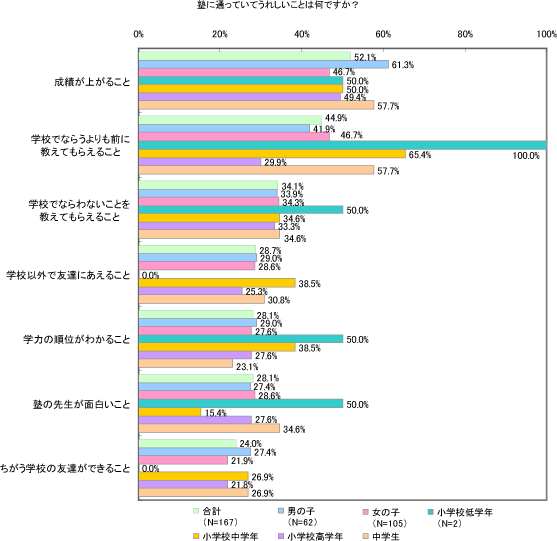

小・中学生を対象に『塾・通信講座』についてアンケート調査
約6割の子どもが｢塾｣もしくは「通信講座」を活用
株式会社バンダイナムコゲームスと株式会社ネットマイルは、2009年5月21日（木）～5月25日（月）に、小中学生が中心に参加する情報交換インターネットサイト「サークルリンク」の登録会員を対象とした『塾・通信講座』についてのアンケート調査を実施しました。
■アンケート結果特徴
- 「塾」と「通信講座」どちらか1つでも利用している子どもが約6割。うち、「塾通い」は約3割、「通信講座利用」は4割近く。
- きっかけについて、「塾」の場合『親に言われて』が最多。一方、「通信講座」の場合は『自分のペースで勉強をしたかったから』が最多。
- 「塾」で勉強する科目は『算数・数学』が圧倒的に多く、教科を特定した勉強法。対して「通信講座」では、主要5教科を幅広く勉強している。
- 2007年、2008年の調査を比較すると「塾」での勉強時間が増加。
■アンケート結果詳細
「塾」に通っているのは約3割、「通信講座」は約4割
塾や通信講座の利用状況について全体でみると、約6割の子どもが学校以外の方法で勉強をしていることが分かりました。
男女別比較では、女子の方が「通信講座」を利用しているといった回答が目立ち、学年別比較では、学年が高くなるにつれ「塾」に通う子どもが多くなっています。
きっかけは、「塾」の場合『親に言われて』、「通信講座」は『自分のペースで勉強がしたい』
学校以外の学習方法を利用するきっかけについては、「塾」の場合、『親に言われて』が全体の34.1%と最も多く、親が塾に通わせることで、勉強に対する安心感を得たいと考えていることが分かります。
また、「通信講座」の場合、『自分のペースで勉強したかったから』が全体の35%を占めますが、「塾」 「通信講座」ともに学年が上がるにつれて自発的に勉強する傾向が高くなり、個人の勉強スタイルが確立されていく姿勢がうかがわれます。
 「塾」通いの方が勉強時間は長い
1週間の勉強時間について質問してみると、「塾」の場合、6割以上が『3時間以内』勉強しているのに対し、「通信講座」の場合は、7割以上が『2時間以内』と回答しており、勉強時間の違いがあらわれました。2007年、2008年の調査結果と比較した場合、「塾」での勉強時間は増加していますが、「通信講座」での勉強時間には変化がみられませんでした。
   「塾」「通信講座」では勉強スタイルが異なる
どんな教科を学習しているか質問したところ、「塾」では教科で回答に差があり、特定の教科に特化した勉強スタイルなのに対し、「通信講座」ではどの教科も幅広く勉強していることが分かります。
『算数・数学』については、「塾」「通信講座」ともにどの学年でも回答数が多く、学校の授業だけでは不足と考えられていると推測されます。
また、『英語』について、「塾」では英語教育が開始される中学生から回答が増加したのに対し、「通信講座」では、小学校高学年から回答が増え、『英語』の勉強に取り組む時期が早いことが分かりました。
 『新しい友達ができる』より『成績が上がる』方がうれしい
塾通いでうれしいことについて全体でみると、『成績が上がること』や『学校でならうよりも前に教えてもらえること』といった回答が上位を占め、『学校以外で友達にあえること』や『ちがう学校の友達ができること』などの友人関係に注目した回答よりも成績や学習意欲に関係した回答が上位に挙げられていました。
親に言われて「塾」に通いはじめる子ども達が多いものの、塾に通う目的が子ども達にも浸透していることが分かります。

アンケートの詳細はネットマイルリサーチのホームページをご確認ください。
http://research.netmile.co.jp/
■アンケート調査概要
| 調査目的 | 小中学生の『塾・通信講座』についての意識変化を、過去2年間の結果と比較し調査する |
|---|---|
| 調査期間 | 2009年5月21日（木）～2009年5月25日（月） |
| 調査対象 | インターネット情報交換サイト「サークルリンク」会員 |
| 調査方法 | インターネットリサーチサービス「キッズリサーチ」を用いたクローズドインターネット調査 |
| 調査協力 | 株式会社ネットマイル |
| 調査項目 |
|
| 有効回答数 | 592名 |
| 内訳 |
|
※小学1～2年を「小学校低学年」、小学3～4年を「小学校中学年」、小学5～6年を「小学校高学年」、中学1～3年を「中学生」として、4つの区分の比較結果をレポート。
※「幼稚園・保育園」1名は、学年別分析に用いるだけの数が確保できなかったため、有効回答から除外し集計・分析。「小学校低学年」については、16名と少ないため、参考値として記録。
■「ネットマイルリサーチ」とは http://research.netmile.co.jp/
株式会社ネットマイルが運営するインターネット上のリサーチサービスです。
共通ポイントプログラム「ネットマイル」の400万人にものぼる累計登録会員を調査モニターとして活用しています。
■「キッズリサーチ」とは http://research.netmile.co.jp/service/kidsresearch.html
「ネットマイルリサーチ」を活用した、小中学生を中心に38万人以上の会員が参加する情報交換サイト「サークルリンク」会員が対象のインターネットリサーチサービスです（サービス開始は2006年11月29日）。
従来、小中学生向けに市場調査（マーケティング・リサーチ）を行う場合、郵送や電話調査といった、ご両親が本人の代理で回答を行う方式が大半を占めているため、実際に小中学生からの回答を得ることが非常に困難でした。また、アンケートの実施期間もかかるため、サンプル数も限られていました。「キッズリサーチ」では、インターネットを利用して、直接小中学生が回答を入力・送信するため、今まで聞けなかった小中学生の“生の声”を迅速に取得することができます。今後も毎月、小中学生を対象にさまざまな切り口でアンケート調査を実施します。
■「サークルリンク」とは http://link.channel.or.jp/
2005年11月23日にサービスを開始した、小中学生を中心に38万人以上の会員が参加する情報交換サイトです。日記やマンガ、ゲームなどすべてが無料で遊べるほか、実際の企業が監修したコンテンツでお仕事体験ができる「サークルリンクお仕事タウン」など、楽しくネットリテラシーと社会活動が学べるサービスを提供しています。
【本件に関する報道関係からのお問い合わせ先】
株式会社ネットマイル 広報担当 ： 村井
TEL ： 
FAX ： 
URL ： http://www.netmile.co.jp/
Email ： 
【アンケートの詳細結果に関するお問い合わせ先】
株式会社ネットマイル リサーチ事業部 ： 岩元
TEL ： 
FAX ： 
URL ： http://research.netmile.co.jp/
Email ： 
※記載されている会社名、製品名は、各社の登録商標または商標です。